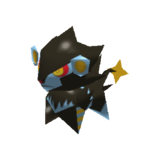
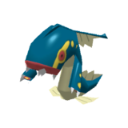
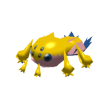
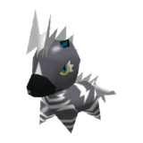
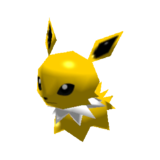
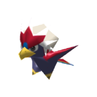

MISC
(WORK IN PROGRESS HERE!!! Writing down key things, will flesh out soon-ish)
Non-Canon Tid-bits
1955 F5 Tornado
Blackwell was greatly affected by the 1955 Great Plains tornado outbreak. Although it's never mentioned explicitly, a datamined voiceline indicates a childhoodfear of lightning.
"Wouldn't believe me. Knew from birth I was marked to die by lightning. Momma forced me into the bath, twisted my vittles and shoved me in the water even though she knew the electricity could sneak up them pipes and cook me like a suckling pig. Bitch never was right in the head."
It's obvious that he got over his fear of lightning, but a part of me thinks that the tornados during the outbreak brought back a deep-seated fear of natural disasters in him. Lightning can be harnessed to perpetrate justice, but tornados will fuck you over with nothing you can do about it, which tap into a fear he never got over; losing control.
Light Sensitivity
There's nothing in the game to support this at all, but I enjoy thinking that Leland suffers from some sort of light sensitivity. He never takes off his sunglasses in-game or in the comic (though this could be because he's insecure about his lazy eye. Or both. Or neither.), and his eyes on his in-game model are slightly squinted (though, he could also just look like that).
He will never admit it. The scientists at Murkoff know and think its funny when he yells as his sleep room lights are turned on suddenly in the morning. His fault for staring at lightning all the time.
Pokémon
I have thoughts about what all of the other Prime Assets' Pokémon teams look like, but for now here's Coyles!
He treats them like shit, and they're super reactive. Zebstrika gets treated the best out of them.
|
 |
LuxrayCool big cat, bonus points for being Dark type. |
|
 |
ElektrossFreaky and weird-looking, just like him. |
|
 |
GalvantulaBiased because I like tarantulas |
|
 |
ZebstrikaAlso biased because I enjoy equines. Rides it like a police horse. |
|
 |
JolteonSmall, portable, packs a punch |
|
 |
BraviaryU.S.A.!!! U.S.A.!!! U.S.A.!!! |